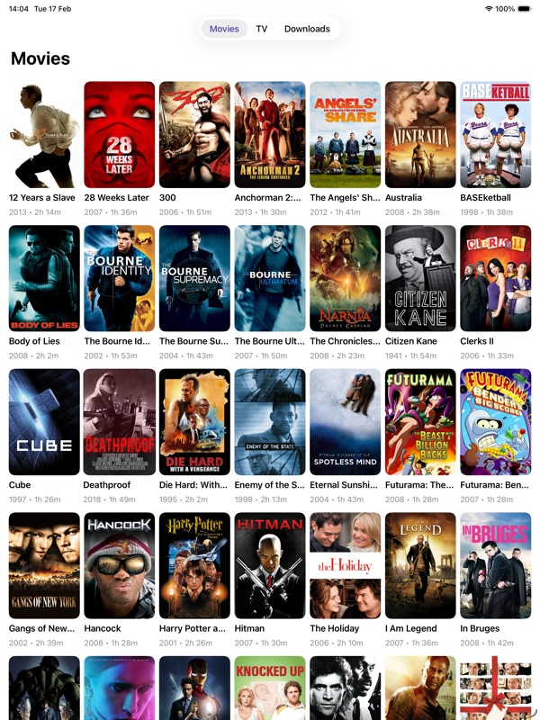
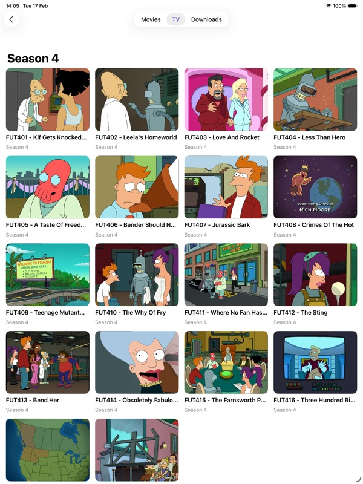

← All apps

FinFlix
Stream your Jellyfin media library from anywhere. A native client built for iPad.
iPad
iPhone
Mac (M1+)
FinFlix is a lightweight, native Jellyfin client built entirely with SwiftUI and AVKit — no web wrappers. Browse your movies and TV shows, play instantly with adaptive HLS streaming, or download for offline viewing.
Supports automatic server discovery on your local network, background downloads, subtitles (WebVTT, ASS, SSA), and stores sessions securely in the iOS Keychain.

